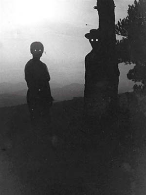

Sobre o mundo invertido
O mundo invertido é fisicamente igual a realidade, com as mesmas construções, ruas, florestas, e afins, mas com o espaço e o tempo distorcidos. Além disso, os locais conhecidos estão tortos, vazios, horripilantes,frios e parecem simulações. Resumidamente, é como se fosse uma versão sombria, grotesca e sem vida, do mundo real.
